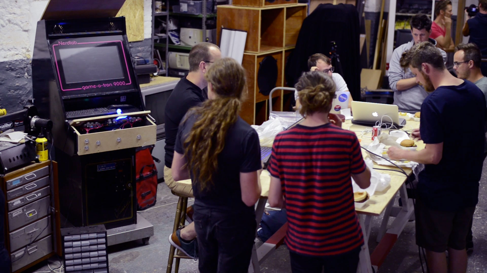
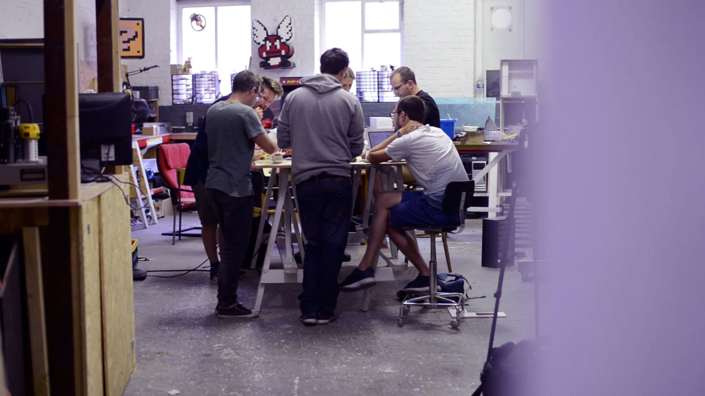

Nerdlab is een fablab, een plek met machines en kennis. Een plaats voor makers, een omgeving om je wilde ideeën te bouwen.
In Nerdlab maken we dingen. Gameconsoles, Soundsystems, (3D) printers, zandbakken of andere machienes. We vinden nieuwe dingen uit door oude dingen kapot te maken, te kijken wat er in zit en er iets nieuws mee te maken. We zoeken uit hoe iets werkt en we leren het elkaar. Daarvoor hebben we boren, zagen, electronica, drank en een hele berg rommel. Die uitvindingen zijn niet alitjd nuttig, meestal zelfs niet. Geen probleem, want uit het proces ontstaat kennis, inspiratie en een netwerk van getalenteerde mensen.
We zijn niet de eerste die dit doen. Niel Gershenfield bedacht de term Fablab voor een plaats waar mensen terecht kunnen voor tools en kennis om hun ideeën te materialiseren. Naast zagen, boren, weerstanden en condensatoren kan je ook aan de slag met onze 3D printer, CNC of één van onze arduino’s. We blijven gestaag bouwen aan het machinepark. Naast materiaal zijn er specialisten ter plaatse die met je mee op zoek gaan of je basiskennis aanschepren tijdens een workshop.